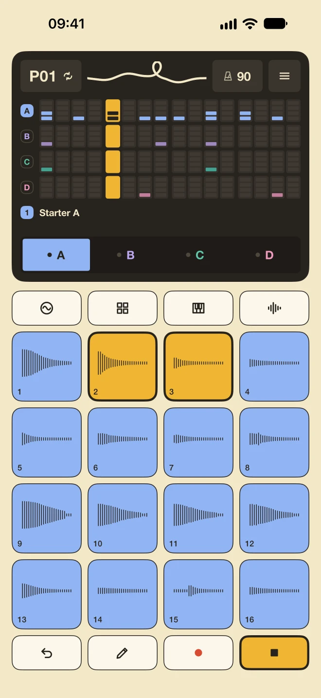

主界面操作指南
Pad 上方的四个模式键用来切换 Pad 的功能。下方的四个按键用来编辑、录制和播放。

模式键
轻点模式键可开启该模式，再轻点一次即可关闭。按住模式键可临时使用该模式，松手后 Pad 会回到原来的模式。
- 1. FX
- 16 个 Pad 对应当前机架的 16 种效果。按住效果 Pad 即可切入效果，松手就结束。
- 2. 样式
- 轻点样式键，再轻点一个 Pad，即可切换到对应的样式。按住样式键，按播放顺序轻点各个样式 Pad，即可排好播放顺序。轻点显示屏上的样式编号可打开「编排」。
- 3. 旋律
- 先在当前机架上轻点一个 Pad。进入旋律后，16 个 Pad 会用该机架最后弹过的音色，弹出项目调性内的 16 个音。调性可在「编排」中设置。
- 4. 音色
- 轻点 Pad 可选择它的音色。按住 Pad 可直接采样，松手即停止。完整录音会保存到素材库。
编辑、录制与播放键
- 5. 撤销
- 轻点可撤销最近一次编辑，按住可重做。
- 6. 写入
- 轻点写入键可持续编辑，按住则可编辑到松手为止。16 个 Pad 对应最后弹过的音色的 16 步。开启 FX 时，对应的是最后用过的效果。轻点一步可写入，轻点亮着的一步可清除。
- 7. REC
- 轻点 REC 进入录制待命，再弹 Pad 即可录入。再次轻点结束录制。也可以按住 REC 边弹边录，松手即停止。
- 8. 播放
- 轻点可开始或停止当前样式或编排的播放。
显示屏上的入口
轻点样式编号可打开编排，轻点速度可打开混音。想跟着示范操作，可以打开右上角的菜单，选择如何使用。